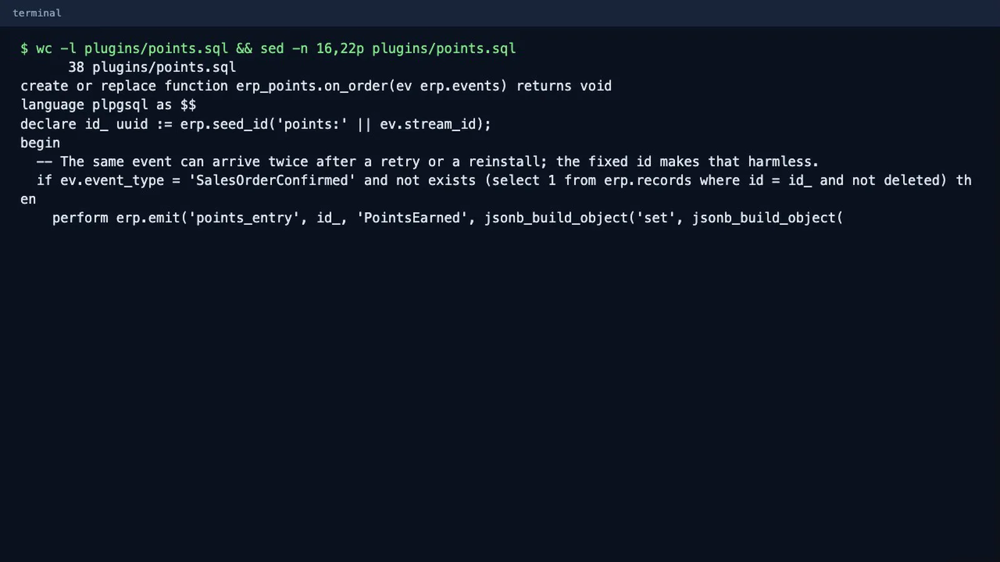
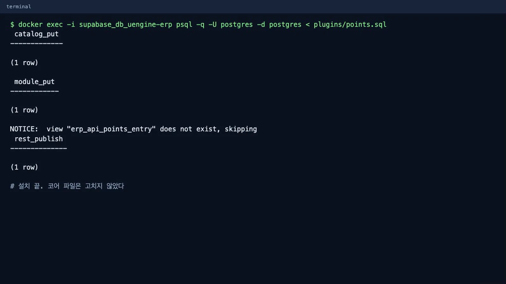
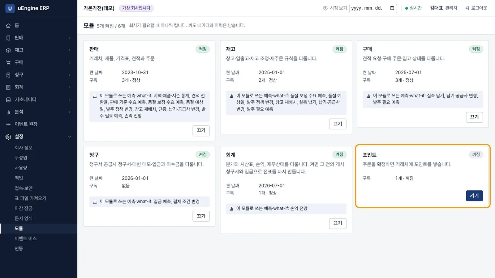
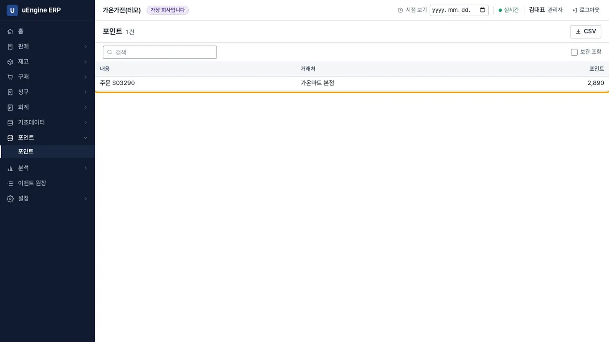
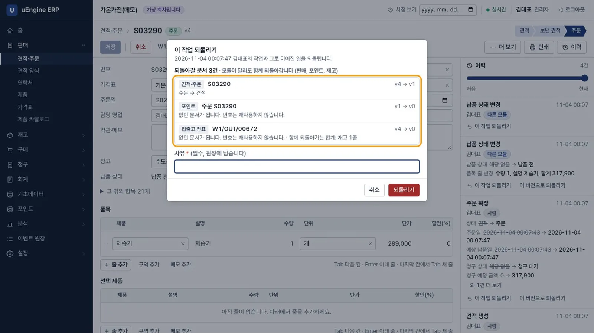
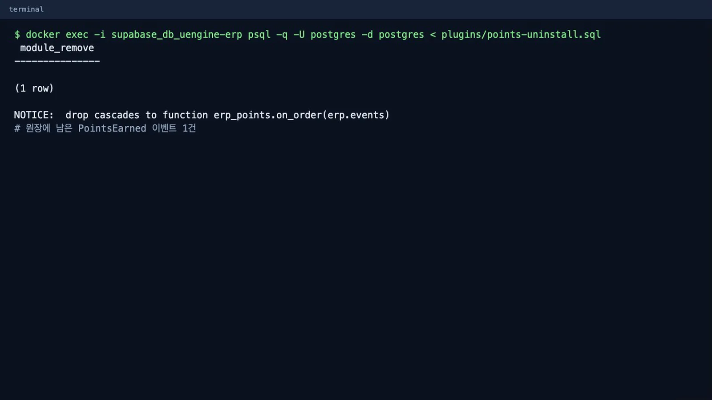
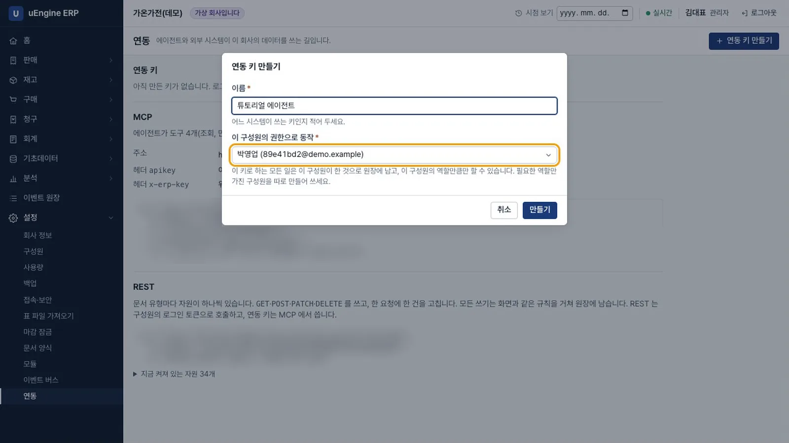
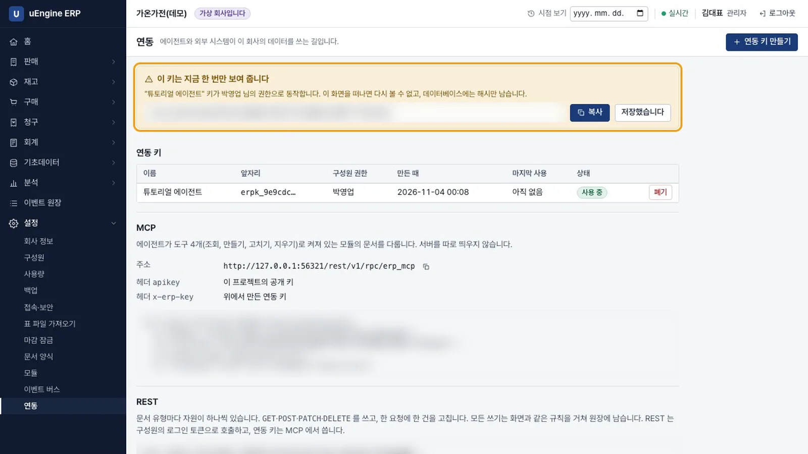
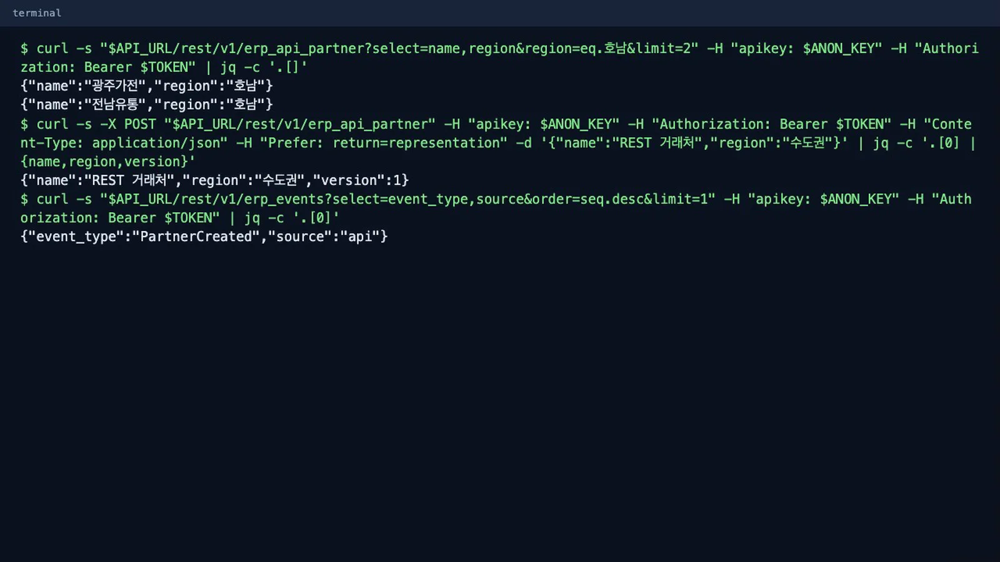
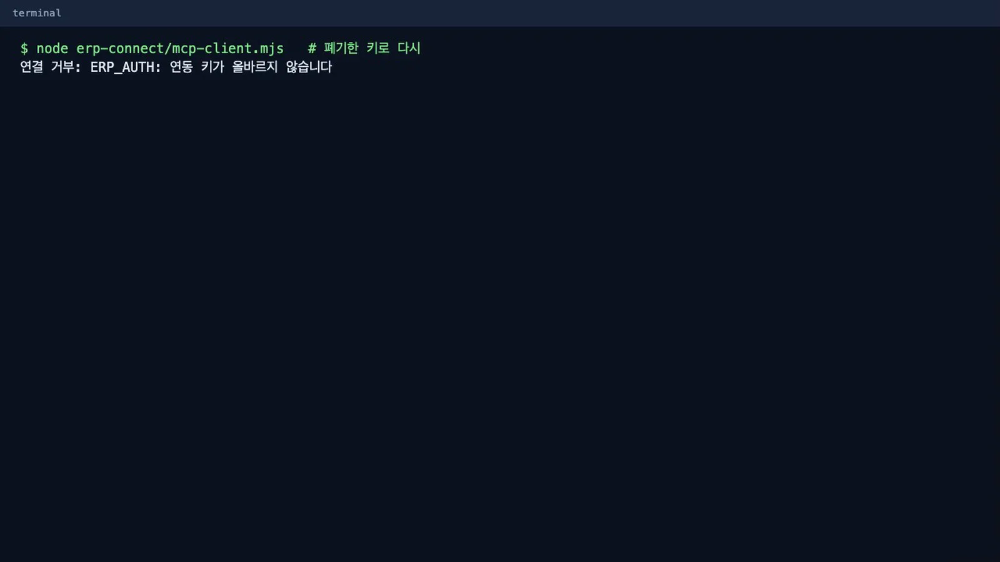

코어를 고치지 않고 SQL 파일 하나로 포인트 플러그인을 설치합니다. 연동 키를 만들어 REST를 호출하고 MCP 클라이언트로 도구를 호출합니다.
무엇을 · 왜#
플러그인도 모듈과 같은 방식으로 이벤트를 구독합니다. 판매 모듈은 플러그인이 있는지 모릅니다.
| 연동 방식 | 주소 | 인증 | 하는 일 |
|---|---|---|---|
| REST | /rest/v1/erp_api_<유형> |
구성원의 로그인 토큰 | 유형마다 자동으로 생기는 자원. 한 요청에 한 건 |
| MCP | /rest/v1/rpc/erp_mcp |
연동 키(x-erp-key) |
도구 4개로 켜져 있는 모듈의 문서를 다룸 |
| 이벤트 | erp_event_feed |
로그인 토큰 | 원장을 순서대로 읽기 |
먼저 알아 둘 것
- 가온가전은 가상 회사이고, 수치는 모두 가상 회사의 것입니다. 화면은 로컬 Supabase에서 찍었습니다.
- 에이전트 제품에 실제로 연동해 찍지 않았습니다. 여기서는 공식 SDK로 만든 MCP 클라이언트로 호출했습니다.
- 플러그인은 코어와 같은 데이터베이스 권한으로 실행됩니다. 권한 격리는 코드 검토에 달려 있으니, 신뢰할 수 있는 SQL만 실행하세요.
- 저장소 링크는 공개된 뒤에 열립니다. 대시보드의 SQL Editor로 플러그인을 설치하는 단계는 아직 클라우드에서 확인하지 못했습니다. 무료 플랜의 속도도 측정하지 않았습니다.
따라 하기#
앞 장과 같은 가상 회사에 관리자로 로그인합니다. 플러그인 파일은 저장소의 plugins/points.sql(38줄)과 plugins/points-uninstall.sql입니다.
- 플러그인 파일 읽기. 포인트 유형을 등록하고,
SalesOrderConfirmed와SalesOrderCancelled를 구독하는 처리기를 정의합니다.
플러그인 파일 - 설치. SQL Editor에 붙여 넣어 실행합니다. 녹화에서는 로컬 데이터베이스에 바로 실행했습니다.
docker exec -i supabase_db_uengine-erp psql -q -U postgres -d postgres < plugins/points.sql
설치 - 켜기. 앱을 새로 고치고 설정 → 모듈에서 포인트 카드의 켜기를 누릅니다. 메뉴에 포인트가 생깁니다.

포인트 카드 - 주문 확정. 고객
가온마트 본점, 창고수도권 창고, 제습기 1개로 주문을 확정합니다. 공급가액은 289,000입니다. - 포인트 확인. 포인트 화면에 그 주문의 포인트 2,890이 있습니다. 공급가액의 1/100입니다.

포인트 - 되돌리기. 주문의 이력에서
주문 확정의 이 작업 되돌리기를 누릅니다. 미리보기에모듈이 달라도 함께 되돌아갑니다 (판매, 포인트, 재고)가 나옵니다. 사유를 적고 실행하면 포인트 목록이 비어 있습니다.
미리보기 - 제거.
plugins/points-uninstall.sql을 실행합니다. 플러그인의 함수와 자원이 사라지고,PointsEarned이벤트는 일어난 일로 원장에 남습니다.docker exec -i supabase_db_uengine-erp psql -q -U postgres -d postgres < plugins/points-uninstall.sql
제거 - 코어 확인. 앱을 새로 고치면 포인트 메뉴와 카드가 없습니다. 다섯 모듈은 그대로 켜져 있고 주문도 그대로입니다.
- 연동 키 만들기. 설정 → 연동 → 연동 키 만들기에서 이름을 적고, 이 구성원의 권한으로 동작에서 구성원을 고릅니다. 이 키로 하는 모든 일은 그 구성원이 한 것으로 원장에 남고, 그 구성원의 역할에 허용된 작업만 할 수 있습니다. 필요한 역할만 가진 구성원을 따로 만들어 사용하세요.

연동 키 만들기 - 키 복사. 키는 한 번만 표시됩니다. 화면을 떠나면 다시 볼 수 없고, 데이터베이스에는 해시만 남습니다. 표에는 앞자리만 보입니다. 아래 그림은 키와 공개 키를 가렸습니다.

키는 한 번만 - REST 호출. 거래처를 조회하고 하나 새로 만든 뒤, 원장에서 출처를 확인합니다. 환경 변수
API_URL,ANON_KEY,TOKEN(구성원의 로그인 토큰)을 먼저 정합니다.녹화에서는 호남 거래처 2곳을 읽고,curl -s "$API_URL/rest/v1/erp_api_partner?select=name,region®ion=eq.호남&limit=2" \ -H "apikey: $ANON_KEY" -H "Authorization: Bearer $TOKEN" curl -s -X POST "$API_URL/rest/v1/erp_api_partner" \ -H "apikey: $ANON_KEY" -H "Authorization: Bearer $TOKEN" \ -H "Content-Type: application/json" -H "Prefer: return=representation" \ -d '{"name":"REST 거래처","region":"수도권"}' curl -s "$API_URL/rest/v1/erp_events?select=event_type,source&order=seq.desc&limit=1" \ -H "apikey: $ANON_KEY" -H "Authorization: Bearer $TOKEN"REST 거래처를 버전 1로 만들고, 원장에서{"event_type":"PartnerCreated","source":"api"}를 확인했습니다.
REST - MCP 호출. 로그인 없이 연동 키만 씁니다. 연동 화면의 예시를 그대로 쓰면 도구 목록을 받습니다.
녹화에서는 공식 MCP SDK(
curl -s "$API_URL/rest/v1/rpc/erp_mcp" -H "apikey: $ANON_KEY" -H "x-erp-key: $ERP_KEY" \ -H "Content-Type: application/json" -d '{"jsonrpc":"2.0","id":1,"method":"tools/list"}'@modelcontextprotocol/sdk)로 만든 작은 클라이언트로 호출했습니다. 도구는erp_read, erp_create, erp_update, erp_delete4개입니다. 박영업의 키로 거래처를 읽고 만들면 원장의 출처가mcp로 남고, 박영업의 권한 밖인 전표 쓰기는ERP_FORBIDDEN으로 거부됩니다.
MCP - 에이전트의 실수 되돌리기. 에이전트가 수량 50인 주문을 500으로 넣어 확정했다고 가정합니다. 재고 모듈은 그 이벤트를 받아 이미 출고 전표를 만들었습니다.
먼저
erp_read의history로 그 작업의correlation_id를 찾습니다.erp_read에rollback을 넣으면 되돌릴 범위를 미리 봅니다. 이 미리보기는 아무것도 바꾸지 않습니다. 결과의streams에는 주문(sale→draft)과 다른 모듈의 출고 전표(confirmed→ 없던 상태)가 함께 나오고,hash도 받습니다.erp_create의type: "rollback"에correlation_id,plan_hash,reason을 넣어 실행합니다. 도구는 4개 그대로입니다.주문은const hist = await call('erp_read', { id: order.id, history: true }) const corr = hist.at(-1).correlation_id const plan = await call('erp_read', { rollback: { correlation_id: corr } }) await call('erp_create', { type: 'rollback', values: { correlation_id: corr, plan_hash: plan.hash }, reason: '수량 오입력: 50을 500으로 넣음' })draft로, 출고 전표는 없던 상태로 돌아갑니다. 이력에는 앞의 기록이 그대로 남고 마지막에Reverted가 더해집니다. 출처는rollback, 행위자는 그 키의 구성원으로 기록되고 사유도 남습니다. 미리보기 뒤에 데이터가 바뀌면plan_hash가 맞지 않아ERP_CONFLICT로 거부됩니다. 에이전트는 자기가 MCP로 한 일을, 그 위에 다른 작업이 없을 때만 스스로 되돌립니다. 다른 에이전트의 일, 사람이 화면에서 한 일, 다른 사람이 이어 간 일은ERP_FORBIDDEN으로 거부되고 관리자가 처리합니다. 게시된 청구서가 걸리면 관리자도 되돌릴 수 없으며 대변 메모로 정정합니다. 이 단계는 6장 영상에 나오지 않습니다. 공식 MCP SDK로 실제 HTTP에서 돌린 시험(test/api.e2e.mjs)의 결과입니다. - 키 폐기. 키 줄의 폐기를 누릅니다. 되살릴 수 없습니다. 같은 클라이언트를 다시 실행하면 연결이 거부됩니다.

폐기 뒤
확인 문제#
플러그인을 지우면 그동안 쌓인 포인트 이벤트도 사라지나요?
사라지지 않습니다. 함수와 자원만 지웁니다. 이벤트는 일어난 일로 원장에 남습니다.
REST와 MCP의 인증이 다른 이유는 무엇인가요?
로그인 토큰은 1시간이면 만료되므로 장시간 실행되는 에이전트에 맞지 않습니다. MCP는 구성원과 연결된 장기 연동 키를 쓰고, REST는 구성원의 로그인 토큰으로 호출합니다.
연동 키가 유출되면 어떻게 하나요?
키 줄에서 폐기합니다. 데이터베이스에는 해시만 있고, 키는 그 구성원의 권한을 넘지 못합니다. 그래서 필요한 역할만 가진 구성원을 따로 만들어 키를 연결하는 것이 좋습니다.
에이전트는 자기가 한 일이면 언제나 되돌릴 수 있나요?
그 위에 다른 사람의 작업이 없고, 잠긴 기간이나 게시된 청구서에 걸리지 않을 때만입니다. 다른 작업이 이어졌으면 관리자가 함께 돌아갈 작업을 확인하고 동의해야 합니다.